Pigs (new, with animal welfare information)

{kind=link}
{kind=link}
{kind=link}
Introduction
Origin of pigs
The pig is one of the oldest domesticated animals. It is found throughout the world especially in regions where there are no social or religious objections to pork consumption.
The majority of the breeds we now know are descended from the Eurasian Wild Boar (Sus scrofa). Archeological evidence from the Middle East indicates domestication of the pig occurs as early as 9,000 years ago, with some evidence for domestication even earlier in China. Figurines, as well as bones, dating to the sixth and seventh millennia BC have been found at sites in the Middle East. Pigs were also a popular subject for statuettes in ancient Persia. From here, the pig spread across Asia, Europe and Africa. One interesting point, while most livestock were utilized initially by nomadic peoples, swine are more indicative of a settled farming community. The reason for this is simply that pigs are difficult to herd and move for long distances. Pigs have become vital to the economy in parts of the world. For example, there exists a "pig culture" in New Guinea as strong and complex as any African culture based on cattle.
Characterization of current pig production in East Africa
The pig industry is characterized mainly by farms having 2 - 5 sows weaning 1 - 2 quite small litters yearly. This low productivity may be attributed to any of the following:
- A short sow productive life (sows are killed early due to poor productivity).
- Generally, poor sow nutrition especially during the gestation and lactation periods.
- Poor housing that predispose the sows to stress
- Poor quality boars or mating system
- Poor feed quality, high feed prices leading to inadequate feeding
- Presence of sub-clinical reproductive diseases leading to low litter size and high pre-weaning mortality
- Long fattening period leading to low returns
- Market demand fluctuation: during periods of high demand the country has had to import pork products to fill the gap
Pig health and welfare - understand pigs as the animals they are
Pigs are social animals, which forms bonds to each other. Bodily contact is important for them, and they prefer to lie close to each other. Pigs are communicative and have a wide range of sounds to communicate with. They do have a good memory, can distinguish between some colors and have a hearing roughly at the same level as humans. They are sensitive and intelligent animals have good learning abilities e.g. they can learn a lot of 'tricks', and they can link to humans and e.g. recognize their name. They can also form bonds to humans. They are able to find their way home from large distances. They are curious and explorative, and from nature, they are scavenging and searching for feed, rooting the soil to find roots, small animals like worms and insects, and all kinds of plant material. Their rooting behavior helps the soil to keep a good balance. They have a good sense of smell, which help them select food and identify 'hidden food' e.g. in the ground. They also have a good sense of taste. They are discriminative eaters, though, and explore to find what they want. In nature, they will forage up to 75% of their awake time, so they have a high activity level by nature. They can walk and trot over quite long distances, and they are good swimmers.
Even though they have been domesticated for many years, they often suffer because there is a mismatch between the environment in which they are housed, and their natural need for being active, explorative and searching for food. They are unable to sweat, so in hot weather they should be provided with opportunities to cool down, preferably a mud bath, which also protects them against the sun. They prefer cleanliness, and e.g. make 'toilets' if the space and surroundings allows. They will always prefer to sleep on clean spaces, as far away from their toilet as possible, and even quite newborn piglets can leave the nest to place urine and dung in another place.
Organic pig production and norms
- The pig production has to - like all livestock production - be land-based. Landless livestock production is not acceptable, and the pigs should form an integral part of the crop rotation system on the farm,
- Conventional pigs have to be reared under organic standards for six months before they are considered organic (i.e. the first litter after the conversion period can be sold as organic). Simultaneous conversion of land and livestock is possible as long as most of the feed for the animals comes from the converting farm.
- The choice of breeds or strains should favor pigs that are well adapted to the local conditions and to the husbandry system intended. Vitality and disease resistance are particularly mentioned, and preference should be given to indigenous breeds or crosses.
Conversion in an organic farm
- When an organic herd is constituted for the first time, conventionally reared piglets can be bought at weaning (at less than 25 kg) and reared as organic.
- An established breeding herd can bring in gilts from non-organic holdings to allow for natural growth in the herd to a maximum of 20% of the herd, if organically reared animals are not available. This number of bought-in breeding animals can be increased under special circumstances (major expansion, change of breed, new specialization developed).
- Boars can be brought in from non-organic holdings.
- Livestock brought in from non-organic holdings for breeding purposes cannot be sold as organic either for slaughter or for breeding.
Feeding
link to: Feeding animals in Organic animal husbandry (in Animal health promotion and disease prevention according to IFOAM norms)
- Pigs must be fed to ensure quality rather than maximum growth rates.
- Pigs must be fed on organically produced feed (60% of home-grown feed can be in-conversion feed).
- Roughage, fresh or dried fodder (grazing) or silage must be added to the daily ration.
- Certain feed materials of animal origin (milk or milk products and fish or fish by-products) and minerals and vitamins (including synthetic vitamins for pigs) can be used.
- Antibiotics, coccidiostatica, medicinal substances, growth promoters and any substances intended to stimulate growth or production must not be used in pig feed;
- Piglets must be suckled at least for 42 days
(Link to: Animal nutrition and Feed rations)
Disease prevention and veterinary treatment
With regard to disease treatments of organic sows or boars: if an organic sow or boar is treated with more than two courses of allopathic treatments in a year (or a piglet in a lifetime) it loses its organic status and must be reconverted or slaughtered as non-organic (vaccinations, treatments for parasites and statutory disease control measures are not taken into account).
Click here to go to general principle of (Animal health promotion and disease prevention) (Holistic disease management) and (Specific disease prevention measures)
Husbandry
- Tail-docking, teeth-clipping and tethering are prohibited;
- Artificial insemination and castration are allowed.
Breeds and Breeding
| 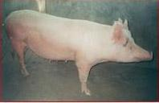 |
| Large white sow |
| (c) S. Gikonyo, Kenya
|
| 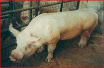 |
| Large white boar |
| (c) S. Gikonyo, Kenya
|
They distinguished by their erect ears and slightly dished faces. They are long bodied with well-developed hams and fine white hair. Very prolific, late maturing with good mothering ability and can be used for pork and bacon production. Fairly hardy animal that can withstand a wide range of climatic conditions. However the breed is very prone to sunburn because of lack of pigment on their skin and should therefore always have access to mud bath and shade. The sows normally have large litter size (10 to 12 piglets), their high milk production and for having excellent maternal instincts. They do very well in intensive production systems.
Large white are found practically in all crossbreeding and rotational breeding programmes. Sows have an enviable reputation as dams and form the foundation of the classic F1 hybrid gilt. They are the favourite breed in the country and the world over.
| 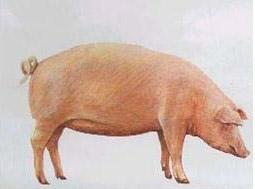 |
| Landrace sow |
| (c) S. Gikonyo, Kenya
|
| 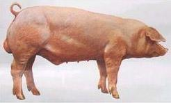 |
| Landrace boar |
| (c) S. Gikonyo, Kenya
|
It is a very versatile breed performing well under good management, in indoor as well as in outdoor systems. They are white in colour, have dropping ears and a straight snout. Its coat and skin color makes it prone to sunburn and they should therefore always have access to mud bath and shade.
Sows produce and rear large litters of piglets with very good daily gain ( ADG) and high lean meat content ideal for either pork or bacon production.
| 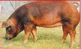 |
| Duroc sow |
| (c) S. Gikonyo, Kenya
|
| 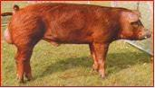 |
| Duroc boar |
| (c) S. Gikonyo, Kenya
|
Durocs are golden brown to black in colour with a thick auburn coat and hard skin. They have small, slightly drooping ears. Traditionally, Durocs have been used as terminal sires (traits associated with it are quick growth, deep body, broad ham and shoulder). Its tenacity in looking after its young, combined with its docility between times, makes it an ideal candidate for an out door pig either as a sire or as a dam. It can survive in extreme cold and wet conditions. Its succulent carcass and heavy muscling makes it a very suitable pig for anything from light pork to heavy hog production. The Duroc or Duroc cross does not make a good maternal sire. Litter size is lower than that of other breeds and the boars are known to be aggressive.
| 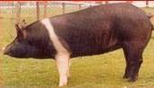 |
| Hampshire sow |
| (c) S. Gikonyo, Kenya
|
| 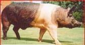 |
| Hampshire boar |
| (c) S. Gikonyo, Kenya
|
The breed has been developed in the United Stares of America and is now one of the world's most important breeds. They are a favorite of small farmers because of their good temperament, fast growth rate and large litters usually between 8 and 14 piglets and sows make excellent mothers. It is used extensively as the sire of cross bred pigs for pork and bacon production. The Hampshire is very prolific. It produces an abundance of lean meat and has more meat than the Large white or Landrace.
| 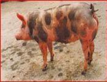 |
| Pietrain sow |
| (c) S. Gikonyo, Kenya
|
| 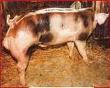 |
| Pietrain boar |
| (c) S. Gikonyo, Kenya
|
This is a Belgium breed of medium size, it is white in colour with black spots. Around the black spots there are characteristic rings of light pigmentation that carries white hair. The ears are erect. The Pietrain is famous for its very high yield of lean meat but this is often associated with the presence of the halothane gene responsible for Porcine stress syndrome. It is therefore not desirable as a pure bred but used in cross bred synthetic terminal sire line.
Other pig breeds not reared in the country: Large black, Middle white, Tamworth, Welsh, Berkshire, Wessex Saddleback.
- Mainly from Farmers Choice Ltd (a leading pork processor)
- Replacement from own herd
- Other small-scale breeder farmers
Choice of Breed
Large white is robust, adaptable and of higher performance than most other breeds. It is preferred by most pig farmers in the tropics. The breed is known worldwide and there are no problems obtaining breeding stock from a variety of sources. It is used for the improvement of other breeds e.g. Landrace.
Duroc - Jersey also has good attributes for both rearing and growth in the tropics. Traditionally Durocs have been use as terminal boars.
Landrace pigs have been widely used for crossbreeding purposes in the tropics. They do well under close confinement feeding but must be well managed and fed.
- Gilts selected to have at least 12 teats so as to accommodate a large litter
- Gilts to be selected from sows, which wean 9 -10 or more piglets per litter and are known to be good mothers.
- Select breeding gilts at weaning period, further selection should be done at 5 - 6 months of age.
- Select fast growing weaners. These will likely consume less feed per unit live weight gain and are thus less costly to keep.
- Select gilts which have well developed hams and comparatively light heads.
- The selected gilts should have good body conformation i.e. strong legs, sound feet etc.
- Select gilts from saws that can stand the conditions on the farm (housing, feeding, management).
It is extremely important to select a good boar since it contributes half the quality of the herd. Areas to consider:
- Boar to have sound feet with good, full hams, uniform curve at the back and of good length.
- Boar to have at least 12 nicely placed rudimentary teats so as to pass on this characteristic.
- Selection to be done before castration i.e. at 4 weeks.
Pure-breeding: mating purebred individuals of the same breed. The progeny has the same genetic makeup. The major objective of pure-breeding is to identify and propagate superior genes for use in commercial production primarily in crossbreeding programs as well as to propagate and identify superior females for maintaining valuable genetic material. Furthermore crossbreeding will not be worthwhile unless superior pure bred individuals are used.
Cross breeding: mating two individuals from different breeds thus introducing into the progeny a gene combination that is different from that existing in either parent or in the breed of either parent. Cross breeding can involve two or more breeds, depending on the desired result. The sole purpose of cross breeding is to take advantage of the observed improvement in performance of the progeny above that of either parent. This is known as hybrid vigour or heterosis.
Out breeding: mating individuals of the same breed but which are less closely related than the average of the breed. There should not be a common ancestor for at least four generation back in the pedigree of the boar and the females with which he is mated. It is a useful mating system in purebred individuals.
In breeding: mating individuals of the same breed but which are more closely related than the average of the breed. This could be between such close individuals as those from the same litter or a boar and his daughter. Inbreeding is rarely practiced because it can cause problems such as a decrease in litter size and increases mortality. Inbred sows are inferior in milking and mothering ability. It delays sexual maturity in gilts and boars. Inbred boars have less sexual libido. Inbred gilts have fewer eggs during oestrus and farrow smaller litters than those out bred.
Breeding is a complex science that requires skill and knowledge. It also requires thorough record keeping. To achieve genetic improvement the following methods can be used:
- Selection: select the best individuals in the herd for breeding, looking at their performance in various characteristics e.g. litter size, growth rate, feed conversion ratio, disease resistance etc.
- Retire: remove the individuals that do not perform well.
- Practice cross-breeding - it has at least two advantages: you can combine animals which have different characteristics, which you like. Secondly, it makes the animal stronger to cross animals which are genetically different (heterosis).
Practical cross breeding
As mentioned above crossbreeding has two advantages:
- It exploits heterosis, this occurs when two breeds which are genetically different are crossed.
- Ability to combine two or more individuals that have desirable characteristics.
| 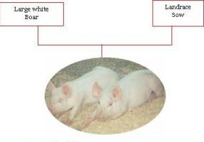 |
| Classic two way cross |
| (c) S. Gikonyo, Kenya |
| A classic TWO way cross. The two ways cross produces F1 Parent gilt of high quality. |
| 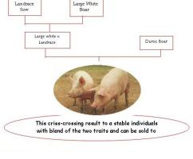 |
| Three way cross breeding |
| (c) S. Gikonyo, Kenya |
| A THREE way cross. This criss-crossing leads to stable individuals with a blend of the three traits |
Management of Breeding Stock
a) Boars
A boar can start serving when it is above 8 months of age. During the first two months of service, the boar should serve only twice per week. After this it can be used up to six services per week. The boar should be kept in its own pen to avoid fighting. Remember that in organic agriculture, it is not acceptable to keep animals indoor at all times, so boars should also have outdoor access regularly. When mating, transfer the sow to the boar (not vice versa).
- One boar can serve up to 15 sows
- Considerable exercise is necessary to prevent the development of leg weaknesses. This can be ensured in a good outdoor run.
- The boar's feet should be trimmed regularly as deemed necessary.
- Boars should be washed with soap and water every 4 months, and sprayed for the lice and mange if they show any symptoms of this.
- A high level of hygiene is necessary. It is recommended to keep the walls, and in case of lice or mange, a suitable disinfectant should be used.
b) Gilts/sows
- Provide enough exercise as some sows will tend to fatten if not exercised. A fat sow takes longer to come in heat. It is also more likely to crush her young piglets.
- First service for gilts should not be until the age of 7 - 8 months and the weight to be 100 - 130 kg, depending on the adult weight of the breed or cross. Sexual maturity occurs as early as 4 - 5 months. Reproductive life of a sow is 4 - 5 years.
- Keep about 3-4 gilts/sows per (outdoor) pen of 9 - 10 square metres (organic pigs should have outdoor run at least) which should be kept clean (change bedding regularly). The pens of sows/gilts should be next to the boars to stimulate them to come on heat.
Breeding Cycle. The normal heat period lasts for 3 - 5 days
Heat signs:
1st stage: Early heat signs
- General restlessness
- Vulva turns red and is swollen
- White mucus discharge
2nd stage: Service period signs
- Real Oestrus lasts for 40 - 60 hours
- Vulva becomes less red and swollen
- Slimy mucus discharge
- Tendency to mount and be mounted by others.
- The sow or gilt will stand still when pressure is applied to her back (can accept a man's weight sitting on her. Thus the right stage to send her to the boar).
3rd stage: Post Oestrus-period signs
- The sow/gilt will not stand still when pressure is applied to her back.
- The swelling of the vulva disappears.
The usual length of oestrus cycle is 3 weeks (21 days) but shorter or longer periods may be seen in the range of 18-24 days.
Serving or insemination
Artificial Insemination (AI)
Artificial insemination is becoming popular in pig breeding. It is not a difficult procedure and, provided the basic guidelines are followed, it can be highly successful. The principles of oestrus detection, timing and frequency of insemination do not differ from those employed when using natural mating. However it is important to ensure that:
- Suitable equipment is used
- Suitable insemination environment
- Proper insemination techniques.
- Well stored and viable semen.
Record keeping of the breeding activities
If a farmer has more than 1-2 sows, it is a good idea to have a sow calendar in place to assist him to remember events connected to breeding. The Weinholt's sow calendar is the most common [Click here to get to the Weinholt's sow calendar]. Based on such a calendar, the farmer can:
- Plan the daily activities in the pig unit
- Plan and control the no. of services
Moment of serving / Insemination
The length of heat period is very variable among sows/ gilts. Ovulation always takes place when 70% of the length of a heat period has passed. Knowledge of the specific heat period of a particular sow is necessary so as to optimize the moment of insemination/service.
ADVICE: Serve or Inseminate 24 hours before ovulation.
Usually only a few of the signs will be seen
- Put the sow with the boar for a short period every day when the heat is expected.
- Always take the sow to the boar. This is less upsetting for him.
- Put the sow and boar together just before feeding.
- Allow the boar to serve twice, with an interval of about 12 hours between services. If the sow doesn't conceive, she will return on heat in about 3-week's time.
- 10 days before service, give the sow/gilt 1 - 2 kg of extra feed extra per day. Continue this for one week after service.
- During the last month of pregnancy, give 0.5 kg extra feed per day but decrease this gradually one week before farrowing. Provide plenty of water to help prevent congested gut during farrowing.
Stimulating regular heat
- Remove the sow from the piglets after 6 weeks of age all at once.
- Take the sow to a house with dry sows.
- Put the sow close to a boar, in a way that allows direct contact by hearing, seeing and smelling
- The sow should not be given any feed on the day of weaning.
- The next day feed about 4 kg/day. This is called flushing and should be done for a maximum of 10 days or until the service takes place.
- Put the sows in groups (stress stimulates heat)
- If there are heat problems, change the type of feed for a few days.
- Maintain a good climate; see to it that there is sufficient light in the house. In organic agriculture natural daylight is favoured.
- Sows should not be too fat or too thin when they are served. It is important to keep this in mind when determining the ration during the suckling period.
Sow is in gestation when:
- After 21 days of serving she does not show heat signs.
- If practiced by the local veterinarian, it can be recommended to echo scan the sow to be sure that she is pregnant, 25-35 days after service.
Selling/Retiring
- Sows that are difficult to get in-pig (pregnant) or which only manage to rear small litters should be sold off or kept away from breeding activities.
- Boars which are infertile or moderately infertile should be retired and kept away from breeding activities.
Expected date of birth
On average pregnancy lasts 115 days after conception (3 months, 3 weeks and 3 days). In gilts the udder begins to develop after two months of pregnancy. In the last 14 days of pregnancy the udder will increase in size. It feels firmer, and the nipples stand out more towards the end of the pregnancy.
| 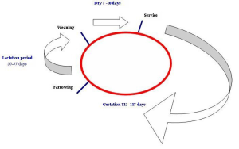 |
| Sow production cycle |
| (c) S. Gikonyo, Kenya
|
Farrowing preparation measures and birth of piglets
- Washed with soap and water. It can be considered to wash her with a mild disinfectant, but be aware that it is a disinfectant which is environmentally friendly and acceptable according to the organic principles.
- If there is a problem with parasites, she can be treated at this stage for worms, lice and mange, A good acaricide (cattle dip), which is acceptable and not environmentally damaging, can be sprayed on the sow or gilt to kill the lice and ticks. An ordinary sprayer can be used for spraying, following manufacturer's instructions for mixing the dip with water. Consult your veterinarian to identify relevant treatments; some medicines may be less suitable for treating highly pregnant animals.
- Immediately after washing she should be put in a farrowing pen of her own. The pen should be disinfected before the pregnant sow is put in. Putting the sow in the farrowing pen a week before the birth will help her get used to the new surroundings. This increases chance of a quiet and smooth farrowing. It makes individual feeding of the sow possible.
- 2 days before farrowing, the sow and the pen should be washed. If relevant, it should be disinfected (again).
- Wash with soap and water and then rinse with a mild disinfectant. Water in which Jik or ordinary bleach has been added can be used as disinfectant.
Signs of farrowing
- Udder enlargement during the last 2 days.
- The udder will start to look much redder.
- A white or clear fluid can now be extracted from some of the teats.
- The sow will be livelier, alert, and restless and she may start to bite.
- She scrapes the floor with her forefeet and sweeps the straw bedding into a corner with her snout to make a nest.
- In group housing the sow may fight other sows.
- Just before delivery, the udder will swell and the sow will calm down.
- Before the first piglet is born a bloodstained fluid comes out of the vagina. In gilts the fluid may be released earlier.
- The sow will usually farrow during the night or evening.
Feeding before farrowing
Reduce the feed given to the sow by one third in the last 3 days. Give maize bran if available to act as a laxative. A laxative encourages bowel movement. On the day of farrowing the sow should not be given her normal food but only laxative food (green leafy material, or maize bran for example) to prevent constipation. Should the dung be too hard; some Epsom salt should be given.
The duration of farrowing may last 1-2 hours and could go up 12 hours. A few piglets are born in a short interval after which there is a longer interval. If this interval lasts more than 1-2 hours or the total birth lasts more than 5 hours, then it is considered abnormal.
Piglets are born head first. A piglet usually appears every 15 to 20 minutes. Very small piglets may be born very quickly, one after another. During the birth the piglets are still enclosed in a membrane which will usually break open as they are born. It is quite common that piglets are still attached to the umbilical cord when they are born. This cord can be left, as it usually soon breaks off on its own. 30 minutes or an hour after the birth of the last piglet the sow pushes out the afterbirth. The sow may suck blood from the afterbirth to build up her strength.
There are times when a piglet may be still born (born dead). Older sows have a higher tendency to have still-born piglets. Although there are normally very few complications at birth it is advisable for someone to be present.
Difficulties during birth
Although there are normally very few complications at birth it is advisable that someone be present. If the whole process of delivery takes longer than 8 to 12 hours then there is something wrong. The birth membrane may suffocate the piglet if they are not taken out. This may happen in particular to the last piglets.
Crushing of piglets Sows do not pay much attention to their offspring until they are all born. Piglets that waste no time in searching for milk may easily be crushed if the sow lies down again in the course of the farrowing. A sow will not always accept human company whilst she is farrowing. Remain at a discreet distance and be ready to intervene if it appears really necessary.
Slow Delivery
If the sow seems to be taking a long time before the birth of the first piglet it usually means that the piglet is stuck in the birth canal and may have to be helped out by hand. For this the utmost hygiene is essential.
The sow's rear end should be thoroughly cleaned and even disinfected.
The hands of the person helping the piglet to come out should also be cleaned and disinfected. The helping person should then put a lot of vegetable cooking oil or Vaseline on the hand and the vagina to make both the hand and the vagina slippery. Do not use soap.
The prepared hand should then be worked slowly into the vagina with a forward and sideways turning or gentle rotating movement.
Simply by doing this it is possible that the sow will start her contractions and push the piglet out.
In some cases it can be relevant to give the sow Oxytocin (2 cc and not more). Depending on how experienced a farmer is, a veterinarian should be called to judge the relevance of this, or any other action. The situation should be carefully evaluated, and manual exploration of the vagina and uterus (someone with a small hand) has to be done before anything else. The piglets can in some cases be released manually, preferably by someone with a small and clean hand, and using cooking oil or Vaseline. A caesarian operation can be necessary, if there is a veterinarian with the right equipment quite close by. If there is no veterinarian who can be called easily and quickly, the sow will have to be slaughtered. It is very important to try to prepare for any problems which are expected before this happen.
Weak piglets
Some piglets may be born with weak breathing or may even appear dead. Piglets that have difficulty in breathing can be helped by holding their hind legs up in the air. By pressing their chest in and out their breathing can be stimulated. Pouring a little cold water over the head and chest can help, but the piglet should be dried off immediately afterwards. If many piglets are weak at birth, there might be something wrong with the sow, or the herd, and all practices including the feeding, vitamins and minerals should be examined.
Piglets born prematurely
Piglets that are born premature (at 110 days or earlier) have parchment-like skin, which is often very red with no hair or only very short bristles. They may have badly shaped claws, screwed up eyes and difficulty in breathing. They wander around the pen trying to find the udder. They should be helped to find a teat and suckle during a longer period. There is a great risk that they will not survive.
Accidental killing of the piglets by the sow
It is quite normal for sows to eat the afterbirth and any still-born piglets. Some people claim that it is by eating the afterbirth that the mother is encouraged to start on her piglets too. Some sows, especially young gilts, can be aggressive towards their litters. The reason for this is not clear. During farrowing, an inexperienced mother may become frightened by the new-born piglets. She may try to avoid them and start biting. One way of avoiding violent mothers is to choose or select young breeding gilts whose mother and grandmother weaned all their piglets every time they gave birth.
Protecting piglets from being killed by their mother
If the piglets are in danger of being killed by their mother they should be put in a box or covered creep area and kept warm (possibly with a heating lamp). A clean cloth or litter should be put in the box or on the floor to make the piglets comfortable. The mother will usually quieten down. Some veterinarians may advice to inject a tranquillizer (or sedative) such as 'Stresnil' (2 mg/kg) to make her calm down. In an organic farm, it may be advisable to try and calm her down in non-medical ways, and this is often possible.
The sow becomes ill after farrowing
The most common problems affecting sows after farrowing are inflammation of the uterus (metritis) or of the udder (mastitis). The sow appears dazed, refuses to get up and to eat, and is feverish. The main causes of these problems are lack of proper hygiene and care of the sow and the pen, before, during and after farrowing. Like with most diseases, these are also result of failures in the health management, which allows disease causing organisms to enter the uterus or udder. Constipation and uterine prolapse are also some of conditions that may arise. Treatment and prevention of these conditions are discussed under common pig diseases (see below).
Piglet management
| 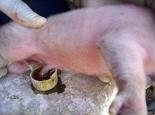 |
| The navel of a piglet being dipped in iodine solution |
| (c) S. Gikonyo, Kenya
|
| 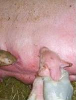 |
| Newly born piglets being assisted to suckle |
| (c) S. Gikonyo, Kenya
|
Make sure the piglets are able to suck from the udder as soon as possible after birth. Their sucking will encourage the sow to let down her milk. Weak piglets may need to be assisted. It is important that the piglets immediately take advantage of the first milk called colostrum. It is very important that newborn piglets receive colostrum straight after birth to build up their natural resistance. Colostrum is the first milk that the sow produces after farrowing. Colostrum should be taken by all the piglets within a few hours after being born. If taken at this time the colostrum is able to protect the piglets against diseases.
| 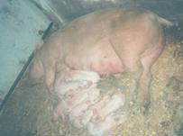 |
| A sow with her two-day-old litter of piglets resting after suckling |
| (c) S. Gikonyo, Kenya
|
After the first day, the digestive system of the piglets breaks down the colostrum and its ability to protect from diseases is lost.
The piglets can be given additional feed of goat or cow's milk, or a mashed bean porridge to which a little sugar has been added. If the milk produced by the sow is too little to meet the needs of the piglets, or the sow completely neglects the piglets, they should be put on another sow or reared on cow or goat's milk.
Feeding piglets whose mother does not produce enough milk
If there is another sow that gave birth within three days ago, the piglets could be given the other sow. This sow should have fewer piglets than the number of teats on her udder. This is because the teats which are not being used by piglets dry off after three days. Piglets normally take control of one teat at birth and continue to feed from it until they are weaned. Transfer extra piglets to the sow with less piglets after disguising them with a spray which has a strong smell e.g. engine oil/kerol diluted with water to last at least 1 or 2 days.
All piglets should be sprayed as soon as introduction is done so that the foster mother doesn't recognize as foreigners. If there is no sow to take over feeding the piglets, they will have to be given extra food by hand. Goat or cow's milk can be given to the piglets in the same way as for motherless or orphaned piglets. Always remember, that moving piglets around between sows should only be done when absolutely necessary. In some herds, it is used as a normal management strategy, but it is nevertheless very stressful for the animals, and there is a risk of exchanging and spreading diseases.
See further below about feeding motherless piglets.
Anaemia or Iron deficiency
Anaemia is caused by iron deficiency. This is an important problem when piglets are not able to get iron from the soil, especially for young piglets kept indoors (why aren't they outside and able to root). At birth the piglets have about 50 mg of iron in their body. They receive additional 1-2 mg/day from milk while they need 7mg during the first week. It is obvious that the quantity of iron decreases rapidly and, if not supplemented the piglets become very pale a few weeks after birth and their growth slows down.
| 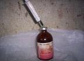 |
| Iron injection solution |
| (c) S. Gikonyo, Kenya
|
This can be prevented by:
- Rub the iron supplement to the udder of the sow so the piglets can swallow it from the teats when they suckle.
- Oral iron- paste containing iron is put in the mouth within 24 hours of birth
- Give the 0-3 day piglets iron injection 1cc intra-muscular, preferably at neck muscles, of 200mg/cc iron dextran or 2cc for 100mg concentration
- Wood ash can also be put into the pen. This will not provide iron, but it does contain other important minerals
Heating for piglets
In some large herds with many farrowing and access to electricity, piglets are often placed under a heating lamp, if the weather is cool. This keeps the piglets warm and hence, prevent pneumonia, and the piglets sleep there and are in this way safe in relation to the sow, which could crunch them. However, providing them with a warming bedding material, e.g. some plant material or leaves, can have the same effect.
Creep feeding
Young piglets should learn to eat other feed than milk from 7 days onwards. If possible they should have high protein feed available to them. This has to be fed in a small area where the mother cannot eat the feed. The feed conversion rate of young piglets is very high and thus creep feeding is particularly economic. Creep feeding helps the piglets to get used to feeding at an early age.
NB: The sow's milk yield also begins to decrease just as the growing piglets require feed.
| 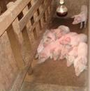 |
| Piglets in creep area warmed by an infra red bulb |
| (c) S. Gikonyo, Kenya
|
Rearing motherless piglets
It is very important that newly-born piglets receive colostrum straight after birth to build up their natural resistance. Colostrum is the first milk that the sow produces after farrowing. If the sow dies whilst farrowing, colostrum will have to be taken from another farrowing sow for the piglets. If they get no colostrum, their chance of survival is very small.
Cow's or goat's milk can be given to the piglets. This is after the piglets have taken colostrum. The milk should not be diluted, as sow's milk is very concentrated. It should be warmed up to slightly above body temperature (37deg - 40degC) in a pan lowered into a larger pan containing boiling water.
Feeding program for motherless piglets
For the first two days the piglets should be fed at regular intervals 5 times a day, for about 10 minutes each time. On the third and on the fourth day they should be fed four times a day, and after that 3 times a day. After 14 days, increase the quantity of milk at each feed, but gradually decrease the number of feeds per day. Gradually change over to more solid feed, so that by the age of about three weeks they should be able to take solid feed. If no nutritious feed is available they should continue on milk for a while longer. The weaker ones can be fed four times a day for a longer time. The figures in the table are maximum quantities - it is better to give too little rather than too much feed. There should be a continuous supply of water, which should be boiled to avoid any contamination.
Feeding program for orphan piglets
| Day | 1 | 2 | 3 | 4 | 5-7 | 8-9 | 10-11 | 12-14 |
| Number of feeding times | 5 | 5 | 4 | 4 | 3 | 3 | 3 | 3 |
| Ml of milk per feeding | 30 | 42 | 60 | 70 | 90 | 120 | 140 | 160 |
As soon as possible, the orphan piglets should move onto regular food. This should be of good quality, protein-rich, and easily digestible. Note-despite the amount of care they receive, hand-reared piglets will never grow as fast as those reared by a mother sow.
Male piglets are castrated to prevent their meat from boar taint. Castration also makes them more manageable when they become sexually mature. There has been more and more concern about this in relation to organic production, because it is not right to systematically castrate animals in a system, which aims at as much naturalness as possible. On the other hand, the taste can really become a problem although some surveys show that it is very few animals. No solution has been found to this challenge, other than some advice to sell/slaughter them at an earlier age. If castration is chosen, it must be done by a professional expert. Castration should be done in the first two weeks of a piglet's life. The animals should be fit and healthy. If this is not the case it is better to postpone the operation.
The piglets should already have started getting used to eating from a trough alongside their mother, and now they should just continue doing so. They will need protein-rich feed as they will be growing fast. There should also be plenty of clean water for the piglets to drink. It is important for the piglets to learn to drink water early in preparation for weaning.
Weaning age
Organic piglets must be suckled till at least 40 days. The mother should be separated from the piglets in order to stop the suckling period. Good housing, good creep feeding and high levels of piglet care must be observed.
Under poor conditions (back yard, local breeds, no concentrate) piglets can be weaned at 2 to 3 months Earlier weaned piglets are hardier during fattening than those weaned late. Piglets should be weaned when at least 6 kgs.
Steps taken at weaning
Sow
- Determine whether the sow is to be culled or served again
- Do not feed the sow on the day of weaning, but flush her in the following days and until the next serving (flush for max of 10 days)
- Move the sow to another pen (near a boar)
- Sometimes vitamin/mineral is given just after weaning
Piglets
- Give piglets identification (tagging, notching, tattooing).
- Weigh the piglets to judge their average weight gain and uniformity
- Feed piglets with care to prevent digestive problems after weaning. The type of feed should not be changed during and just after weaning
- Weaning (6-7 wks) start by feeding about 50% of the ration piglets receive during the last few days of suckling, then increase gradually.
- Check health of the piglets carefully (especially first 4-12 days after weaning).
- Prevent stress, pay attention to hygiene and climate of the pen.
Disease problems at weaning
- Post weaning diarrhoea common after weaning
Symptoms: Piglets may have a rough coat, depressed appetite, sometimes diarrhoea, swelling around the eyes, hoarse squeaky voice, and sudden death
Prevention - Reduce feed after weaning
- Make no sudden feed changes
Include crude fibre (bran) in the feed
- Prevent stress
- Use of medicated feed/water (prophylaxis)
- White diarrhoea
This disease affects piglet of 2-4 weeks old. E. coli bacteria and factors like first creep feed or changes in sow milk are the major causes.
Symptoms: faeces become more liquid, piglets become pale. Lasts 2-5 days
Prevention:- Good feeding of the sow
- Hygiene
- Fresh and clean drinking water
- Prevent anaemia and stress
- Feeding of piglets as from 7 days after farrowing.
Housing
See also under: Housing in Organic animal husbandry (in Animal health promotion and disease prevention according to IFOAM norms)
Good, efficient housing makes management easier and helps the farmer to successfully rear 85 % or more of all the live born piglets to market weight. Pigs at different stages of growth need different environments (temperatures) rations and must have outdoor access all the time. Growing and reproducing pigs must be protected against high temperatures. The houses must therefore be built in such a way that the pigs are protected against extreme temperatures and other bad weather conditions such as cold winds and continuous rain.
Types of housing
 Free-range pig keeping (c) S. Gikonyo, Kenya
| In free-range system or a tethered system where pigs are on a rope, no housing is provided apart from different forms of night shelters, e.g. a roofed coral or a coral under a leave roof. If pigs are tethered, look carefully after that the rope does not hurt them, and that they have everything which they need, within reach, and can be in shade if needed. |
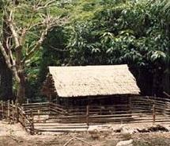 | In improved free range system, pigs are confined within a fenced area using strong wire netting or local materials such as bamboo. Shade is essential and is usually provided by simple roofs constructed or use of tree shades |
| Improved free-range system - fenced | |
| (c) S. Gikonyo, Kenya
|
| 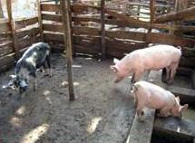 | Semi-intensive: Pigs are kept in houses confined to a limited space. Feed mainly fresh water and fodder have to be brought to the pigs. A roof is provided, the walls commonly made of timber off cuts or old iron sheets. If this is partly outdoor, the pigs have rooting material and space enough, this can probably be acceptable in organic farming |
| Semi intensive system | |
| (c) S. Gikonyo, Kenya
|
| 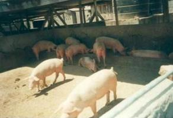 | Intensive pig keeping: Intensive pig keeping: Pigs are kept in complete confinement; fatteners, boars and sows with their litters in separate units. Management is usually high and higher numbers of pigs are reared. This type of system is not allowed as organic agriculture and should not be encouraged also for conventional farming. |
| Intensive pig keeping system - not allowed in organic farming | |
| (c) S. Gikonyo, Kenya
|
How to keep sows and pigs?
In organic pig and sow herds, confinement of animals is not allowed for shorter or longer periods. According to the principles, animals should have access to natural behavior, and exercise is a natural need. Especially, sows around farrowing needs to perform natural behavior, e.g. nest building. However, keeping them in pigsties indoor in combination with outdoor runs is possible, and keeping weaned pigs in pigsties with access to an outdoor run is also possible.
Certain guidelines can be given, no matter which system is chosen
- The number of live piglets at the age of weaning will increase, if they are born in secure and healthy surroundings.
- Controlling the health of the pigs is easier if they are kept in a yard. They should in all cases be easy to overview, because that gives the best chance of identifying problems at an early stage,
- A high level of hygiene should be maintained, no matter whether they are indoor or outdoor. The pen should be cleaned and kept clean, and the animals should preferably have soft bedding material,
- Feeding routines should be carefully controlled, especially in cases where individual feeding may be necessary.
- Manure can easily be collected and used for fertilizing land from pigsties.
- If possible to integrate pigs into the crop rotation system, use can be made both of their manure and their rooting behavior in cases where management is needed of a field after harvest and before the next planting.
- Protection against theft should always be considered, either by taking them indoor during night, and by placing them in places which discourage thieves to look for them.
The following are basic requirements that a pig house should meet to ensure increased productivity and profitability of a pig enterprise:
- The pigsty should be comfortable for the pigs: good ventilation and ample shade, no overheating, no smells, free from draughts and no dampness.
- If the pig is exposed to direct sunshine, there should be possibility for mud baths.
- Floor should be kept dry and must be rough to avoid pigs from falling and therefore being unable to move in the pen freely
- The floor should be concrete or wood since pigs have the tendency to dig into the ground thus making it difficult to clean and increasing the rate of parasitic infestation to pigs.
- The house should have dunging area at the rear and feed trough and water trough in front. It should have a slope to allow free drainage.
- The pens should not be near the dwelling houses or below the wind because of smells and flies.
- To minimize transfer of disease animals of the same age should be housed as close as possible next to each other and the wind flow should be from the direction of the youngest to the older animals.
- The costs of construction the pigsty should fit the pig production system. Cheap, readily available and durable materials should be used for house construction to reduce cost. The house however should have all the essential parts.
Location of the Pig House
- A pig house should be sited away from walls of other buildings to allow air circulation The area should be well drained.
- The building should face east - west to avoid direct sun rays or have shade from trees.
- The pig house should be located such that the wind flow is away from the residential premises.
- It can be convenient to place it near the family house, to keep it close and thereby prevent theft.
In hot climates buildings should be of the open type (half walls) which facilitates surveillance, promotes excellent ventilation and are inexpensive. It is difficult to control heat stress in fully enclosed buildings in the tropics.
There are a number of designs according to their use for weaner pig production, fattening pigs or a combination of breeding and fattening.
The decision as to which option to follow is based on the general organization of the local pig industry.
Recommended Materials
Floors
Floors must be impermeable, and easily cleaned with a shovel and brush as well as with pressure washers. This allows eggs of parasites to be removed and prevents spread of infection. Floors of hardened soil (murram) are not appropriate because pigs grub the soil. Special care should be taken to make the surface of floors non-slippery where concrete or wooden floors are made. Wooden floors are warm but have specific problems such as decay, insect attack and chewing by pigs. Hardwood must therefore be used, making them very expensive. Concrete floors are tough and long lasting if well made; easy to clean and reasonably priced. They are also cool, which is beneficial in hot climates. Floors need to have a sufficient slope of about 3% or slightly steeper which allows adequate drainage.
Bedding
In organic farms, bedding material should be provided for the pigs, no matter the age, such as rice straw, sawdust, dry leaves etc. If using plants, make sure that they are not poisonous for pigs. Pigs have a habit of finely chewing their bedding litter and will swallow part of it. The leaves of the Wonder Oil Plant (Castor Bean - Ricinus communis) for example should not be used. Bedding material should be changed regularly to keep the pen clean and to avoid any parasite build-up.
NB. The mixture of bedding with dung and urine makes an excellent fertilizer for the fields, and is especially valuable if converted into compost.
| 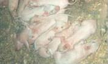 |
| Piglets on saw dust bedding |
| (c) S. Gikonyo, Kenya
|
Walls
Walls should be erected over a foundation of sufficient strength. They can be constructed of brick, stone, mud or bamboo or any other material suitable for the locality and climate. Stone or brick walls are costly but durable and hygienic. Bamboo and mud walls are economical and useful but are temporary and hard to keep hygienic. Walls supporting the roof and wall partitions with which the pigs come in direct contact must be strong and materials such as brick, stone, or cement concrete may be best at least for the lower parts of the walls.
Vertical barriers
Partitions within piggeries (90cm, except for boars, which should be 110cm), which allow different categories of animal to be separated, should be provided with gaps to allow good circulation of air at pig height. In order to prevent pigs from escaping, spaces between planks must be small at the bottom.
In order to avoid damage from pushing, posts must be solid and planks nailed from inside. Partitions of reinforced concrete 10 cm thick are also possible but these are more expensive. These solid partitions should be limited to transverse sections separating different areas of the building but should not be for longitudinal partitions as this would limit air flow at ground level.
For the outer wall special wire netting or gates are used effectively. For the inner walls, if the piggery is two-rowed, a system of rails or flexible wire above the trough is preferable. This allows pigs in pens opposite to see each other. Older gilts and dry sows come on heat faster when they see the boar.
Gates
These should consist of 200 mm planks, built with reinforcement in the shape of a 'Z' on the inside. A width of 60 cm is sufficient even for the biggest animals. They should be attached with particularly strong fittings to withstand pigs rubbing against them. The latches should be of the locking type that is not opened if the door is shaken. A latch is moved much more easily than a bolt.
Roofs
The roof should be light, strong, durable, weather-proof, a bad conductor of heat and free from tendencies to condense moisture inside. They must ensure maximum shade and should extend down almost to ground level to reduce penetration of oblique sun rays and entry of rain when blown by the wind. Roofs can be made of thatch, aluminum, galvanized iron, tiles, wood or bamboo. Thatch, bamboo and galvanised iron roofs are the most recommended. Recycled sheets certainly are still of use for makeshift piggeries.
| 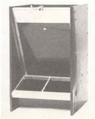 |
| Dry feeder |
| (c) S. Gikonyo, Kenya
|
Feeders
A considerable amount of care must be taken with feeders to avoid all feed wastage. In the first place, whatever the type of piggery, they must be fixed. A mobile feeder is always up-ended and the food soiled, trampled and wasted. As a consequence, experience has shown that feeding on the ground is not appropriate. In hot climates pigs occupy most of the pen area and tend to soil the entire floor area, particularly at high stocking densities. Wastage of food seems to be higher.
Feeding troughs must be easily cleaned, even if pigs themselves do this to an extent. The internal surface must be smooth and without sharp angles. The depth must be sufficient (20 cm) such that the food only occupies the bottom and cannot be flicked out.
Finally, they should not be used as a wallow: pigs have the habit of lying in feed troughs. Therefore, subdividing the trough transversely with metal rods (10 mm preferably) every 40 cm, if it is to be used by many animals, is recommended. This has the advantage of allocating places from the moment of feeding.
The trough may be wooden and fixed to walls with removable bolts. However, if it is to be used by more than two animals it must be replaced by one made from cement, which meets all necessary requirements. It should be placed along the service wall to aid distribution of food. Cement troughs should have a round hole in the bottom with a bung placed from the outside; this will allow them to be cleaned with water.
If a basal diet is fed ad libitum, this may be offered effectively from wooden hoppers which may contain maize, dry cassava chips, etc. This ensures that animals do not go without food, and makes distribution easier. These hoppers may be made readily from wood. There are advantages in surrounding the bottom corners of the base with iron to prevent its rapid decay.
The animals must be able to reach the feed easily. The feed level must be kept as low as possible to avoid feed wastage.
Watering
| 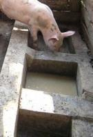 |
| A water section in between two feeding sections in a concrete trough |
| (c) S. Gikonyo, Kenya
|
Pigs in hot climates, particularly lactating sows, must be given plenty of water, which should be continuous. When feeding under restricted conditions, the troughs may be used as drinkers between meals.
For large piggeries where a running water supply is available, automatic drinkers should be used. Water within bowl/drinkers is soiled regularly and pigs themselves often compound the situation. Nipple or valve drinkers are preferable. These are placed at a height of 60 cm with an additional step of 30 cm placed beneath them if they are to be used by piglets. These drinkers have several advantages; the water drunk is always clean; spillage is minimized and costs are reduced. Their use is governed to an extent, however, by stability of water pressure. Their control is not standard and becomes impossible under situations where pressure is subject to wide variations. However, low pressure can be maintained by using a reducing valve or a water storage tank.
| 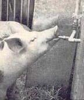 |
| Automatic drinking nipple |
| (c) S. Gikonyo, Kenya
|
Space Requirements
| Sows | Fatteners | Weaners | Boar | |
| Trough Length (cm) | 40 | 35 | 20 | - |
| Floor Space (m2) | 1.2 | 1 | 0.5 | 2.5 x 3 |
| Dung area (length in m) | 1-1.5 | - | - | - |
Lactating sows will require a creep area (1 square metre) or special pens fitted with guardrails /hurdles or supplied with a farrowing crate.
Space
The housing system should allow all pigs to lie down comfortably at the same time on a soft surface with bedding material.
- The lowest bar of the rails in the farrowing area must be 23 cm above the floor
- Trough depth 20 cm
Special Housing Requirements
Special accommodation for the sow with piglets is essential to avoid high mortality among the piglets. Separate areas for both the sow and piglets are recommended by many. Not all sows are naturally attentive (good mothers), so special management is needed to avoid crushing of piglets. Some breeds also make sows very long and particularly heavy on the hind part, which makes it difficult for them to lay down quietly and under full control. The risk of crushing is consequently very high.
| 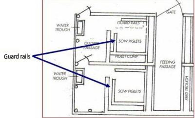 |
| Guard rails at 23cm from floor and 75cm from the walls |
| (c) S. Gikonyo, Kenya
|
Using guard rails and hurdles and providing a creep area where the piglets have a warm nest away from the sow can reduce mortality. At the same time, it's important to have good access to the pen and be able to feed and handle the animals. Several designs have been developed to meet these basic requirements.
You may provide the piglets with a special safe place called a 'creep area' in the sow's pen where the piglets can creep in for warmth and safety. The sow's pen can be divided into two parts, the bigger area for the sow and the smaller area (1 square metre) for the piglets. The opening to the creep area should be small enough to only allow piglets inside. A heating lamp or charcoal burner raised on a firmly placed block should be put in the creep area to provide extra warmth. In very cold weather, the creep area can also be covered with empty grain bags in order to trap heat inside the creep area. The piglets will need the extra heat until they are 2-4 weeks old depending on where they are reared. When the piglets are cold they will tend to bundle together. The piglets nearly always prefer the protective 'creep' rather than lying against the sow. The creep area can be used for introduction of a little feed for the piglets as early as the 7th day of age. This helps the piglets to get used to eating other feed in readiness for the time of weaning. (see figure 16 Piglets in creep area warmed by an infra red bulb)
| 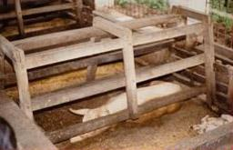 |
| Farrowing/rearing pen with sow confined |
| (c) S. Gikonyo, Kenya
|
A combination of a farrowing and rearing pen, the sow is confined in the sow area (0.7x2.5metres) leaving two creep areas on either side (0.8x2.5 metres). A run of 1.5 metres is provided at the back. If this type of confined pen is combined with exercise areas or outdoor runs, they can probably be used in organic herds. Otherwise, they are prohibited in organic farms.
Restrictive Farrowing /Rearing pens - are not prohibited in organic farming and should be discouraged
Restrictive farrowing rearing pens for intensive production are also available but cost is prohibitive, and they are not suitable for organic production. Organic management favours that animals should be allowed natural behavior also during farrowing, and this is absolutely not possible in these pens, which force the sow to stand, lay or sit with her head in one direction. In large parts of the world it is forbidden because it does not allow exercise and all animals should be allowed regular exercise. (In these systems the sow is confined in a space of 65 cm by the two sets of hurdles. A creep area in front (50 cm by 80 cm) is provided with heating source to provide warmth to the piglets. The floor is made up of plastic slates for easy manure handling). In other words, if the use of these pens is not explicitly forbidden according to national standards, they should be discouraged.
Dry and pregnant sows can be housed in different ways. On smallholder farms the dry sows can be in one group, in a pen with an outdoor run. For group housing, a maximum of 3-4 sows should be kept in each pen of 9-10 suare metres.
| 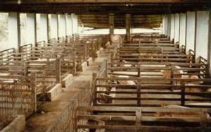 |
| Sows in group housing on a large farm |
| (c) S. Gikonyo, Kenya
|
On small farms it is difficult to form uniform groups in terms of age, pregnancy stage, size etc. It will be a great advantage to form groups of animals with the same feed requirements. Otherwise, individual feeding should be explored, so that any saw gets the ration it needs.
At weaning, sows have to be moved from the farrowing pen to another pen (preferably another compartment or building). To stimulate them to coming on heat, sow contact with the boar is essential. This could be achieved by keeping the sow in a pen next to the boars' pen. Where land is available, sows can also be kept partly or completely out doors. Sows kept in paddocks should be rotated regularly to avoid parasite problems and to keep the pasture in good shape.
At weaning, the sow should be taken away from piglets. The weaned pigs can be taken to another pen after some time. It is good for them to not have all the changes at once. Weaners of the same age can be kept together. Pens for newly weaned pigs can be simple as long as a lot of attention is given to hygienic condition to avoid scour and worm infestation. Organic weaned pigs should have an outdoor run.
Housing of Boars
The basic requirements for environmental comfort of boars and sows are similar. It has been observed that excessively high temperatures negatively affect the quality of the boar's semen. Thus care should be taken to ensure that the boar is not subjected to extreme hot or cold conditions. A minimum area of 2.50 x 3.00 square metres is required. When a boar has a mate, the pen area should be 8 - 9 square metres. A separate area can be created (4.00 x 4.00 square metres) where the mating can take place. The pen or service area must be kept dry and free from obstacles.
Gilts
Gilts from three months till service (8 months) can be kept in pens which are similar to fattener pens. Afterwards they should be kept in a different pen with a different floor space. It is important to have enough spaces available for gilts. Up to 8 gilts can be kept in one pen of 3 x 3m.
| 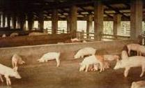 |
| Housing of fatteners |
| (c) S. Gikonyo, Kenya
|
In designing the kind of fattener house, the following must be taken into consideration:
- Construction with outdoor area that promotes animal welfare, with shade and rain-protection
- Construction preventing feed losses and saving labour
- Construction price in relation to the earnings of the fatteners.
NOTE:
- A limited number of fatteners per pen has a positive effect on the productivity (high ADG)
- Not more than 8-12 fatteners should be kept in a single pen (3 x 3 m).
Layout of the piggery
| 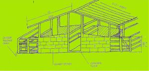 |
| Layout of the piggery |
| (c) S. Gikonyo, Kenya |
A modest piggery may be composed of adjacent pens in one row with a roof extending over them so that exposure of pigs to sunlight is minimised. The dunging area should be on the side where the door is with the feeder on the other side in the shelter of the roof. Piggeries consisting of more than six pens should be built in two rows to avoid the building being too long. This is to enhance air circulation.
The layout of the building should be arranged to reduce traveling distances to a minimum. Pens should be positioned as in a piggery with only one row and opposite each other with feeders facing each other. The central passage should be 1.5 m wide to allow wheelbarrows and feed trolleys/wagons to pass. It should not be too wide otherwise, the cost of covering the area will be high.
Stores must be situated in such a way that feed trolleys/ wheel barrows have good access to passages and that walking lines are as short as possible.
Before building a pig house, one must know the number of places or pens needed for lactating sows, dry and pregnant sows, replacement stock, boars and fatteners. These places can only be calculated after a farmer has decided about the following starting points:
| Construction plan for small scale sow unit |
| (c) S. Gikonyo, Kenya
|
- The number of sows on the farm.
- The expected number of farrowings per sow per year (litter index).
- The division of the farrowings per year (specific season or year round)
- The weaning age.
- What kind of weaner pens the farmer want to use.
- Whether the farmer wants to have a boar or use artificial insemination.
- Whether he selects his own young breeding stock or wants to buy them from outside and at what age.
- What type of housing for dry and pregnant sows (group or individual).
- The expected selling rate.
- The expected growth of the piglets.
- Days needed for disinfection and cleaning.
- The expected growth for the fatteners.
- The number of animals per pen.
Formulas to Calculate the Number of Places or Pens
The number of places or pens, for a farm with farrowing saws year round, can be calculated as follows:
| Farrowing rearing pens |
 |
| Weaner pens |
| 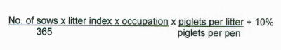 |
| An allowance of 10% is given for longer gestation periods, lower growth of piglets and other irregularities in the reproduction cycle. |
| Places for dry and pregnant sows |
| (1/3 dry sow till 1 month after service; 2/3 pregnant sows) |
|
|
Number of pens for boars
A teaser boar is necessary when A.I. is used. When natural service is used, one boar for every 15 sows must be considered.
| Place for fatteners (closed farm) |
Examples
On the example farm: There are 5 sows, piglets are weaned at 7 weeks and moved to the weaner pens 5 weeks later weighing 20 kg and housed 8 per pen, 3 days of cleaning weaner pens.
The sows are kept in groups of 5. Litter index 1.7, while for the occupation days one week is taken for acclimatization the sow before farrowing and 3 days for cleaning and disinfection.
| Number of farrowing rearing pens | |
Weaner places 5 * 1.7 * (35+3) *7.5 +10% = 7.3 places |
Number of places for dry and pregnant sows
The number of days from weaning to service is 6 (fixed). After calculation we arrive at 45 lost days.
5 * 1.7 * 159 = 3.7 places (dry sows can be in one group outside)
365
| (Cycle is 365/ 1.7 = 215 days. 215 - 49 - 7 = 159 days occupation)
Places for gilts The selling percentage is 40% and only 2 from the 3 gilts selected at an age of 3 months will come in production. The gilts stay in the group gilt-pen till service.
| |
|
|
Places for fatteners
| Places needed | |||||||||||||||||||||
| (5 * 1.7 * 7.3) - 6 = 25.6 2.37
In summary on a farm with 5 sows and the offspring for fattening there are the following places and pens:
|
The expected daily gain is 500 grams and the growing period is from 23 kg till 93 kg live weight. First the number of rounds has to be calculated: growth (93 - 23 kg) is 70 kg. Daily gain 500 gram so it takes 70 / 0.5 = 140 days to grow to slaughter. An allowance of 10% has to be added (slow growers, extra occupation and cleaning) 140 + 10% total occupation days. This means 365 / 154 = 2.37 rounds per year.
Feeding pigs (new)
For general information see also: Feeding animals in Organic animal husbandry (in Animal health promotion and disease prevention according to IFOAM norms and Fodder cultivation (in What to consider when choosing to keep animals
For pig rearing to be an economical venture special attention should be paid to both quality and quantity of feeds fed. High growth rate and fertility can only be achieved through proper feeding. In pig production, feeds contributes to 60 to 80% of the total rearing cost and it is therefore important to feed recommended quality and quantity for each pig category. Proper troughs are important to minimise feed wastage especially where floor is not cement or where litter is applied on cemented floor..
Pigs are known to eat a wide range of feeds available at farm level including kitchen swill and green farm by-products. However their growth performance will depend on the feed quality. Lower quality feeds will give lower growth performance but could be economically profitable because of the relatively low price and or the availability at the farm. Pigs must be fed the correct quantity of the right feed mixture for the performance they have to deliver. The nutrient requirements, especially digestible energy and protein, of the various production classes differ. These production classes include:
- boars and pregnant sows
- sows with piglets (lactating sows)
- young pigs, three to 10 weeks old
- growing pigs up to slaughter at a live weight of 60 or 110 kg.
Feed sources
The main resources for feeding pigs are cotton seed cake and prairie meal, with gluten feed as a source of protein. Pigs are in competition with humans for maize, their main source of energy. Other energy sources include milled by-products such as the bran from wheat, maize and rice, along with maize grain, wheat grain and semi-refined oil. Limestone is the main local mineral source. Although there is no shortage of animal feed in Kenya, the cost is high and in some areas quality is not the best. Concentrates, for instance, are available but very expensive. The cost of feed has increased by 450 percent in the last three years (KENPFA). The main feeds types manufactured are Pig Creep pellets for piglets, Sow & Weaners for breeders and Pig Finisher for fatteners. Sow & Weaner, which is preferred by most farmers, is produced in the highest volumes by most companies. Challenges facing this area include a poor quality and high cost of ingredients as well as concentrates; inadequate and hard-to-access mineral supplementation; unavailability of local sources of vitamins, amino acids, macro- and micro-nutrients; frequent drought.
Feed mixtures can either be bought or the farmer can mix them himself. The latter is less expensive but it is important to consult an expert on how to mix the feedstuffs that have to be included in the mixtures for each of the production classes. The various feedstuffs must be weighed off correctly before mixing.
Feed mixtures for each of the pig categories must contain the right quantities of the following nutrients, namely:
- digestible energy (DE)
- proteins
- minerals
- vitamins.
Pigs are monogastric animals and digest crude fibre to a much lower extend than ruminants do. When feeding green plant material or by-products, it should be preferably young not fibrous feed. In table 1 the energy content (DE) for pigs is given, as well as the protein content and mineral and trace-elements. When no analysis from farmers own feeds are available, the values from this table can be used to estimate the feeding value of the rations for pigs. One should realize that the chemical composition of feeds can differ because of different growing, harvesting and storage conditions.
Table 1. Dry matter content, chemical composition and digestible energy (DE) of feeds for pigs
| Roughage | DM | CF | CP | Ash | DE | Ca | P | K | Na | Mg | Mn | S | Zn | Cu | Fe | Co | Se | Mo |
| Acacia, husk | 92 | 26 | 11 | 4.1 | 9 | 3.8 | 1.6 | 12 | 0.1 | 1.5 | 22 |
| 18 | 5 | 68 |
|
|
|
| African locust bean, pod husks | 94 | 24 | 4.7 | 8.9 | 9 |
|
|
|
|
|
|
|
|
|
|
|
|
|
| African locust bean, pod pulp | 35 | 15 | 4.9 | 4.6 | 12 | 13.2 | 17.6 |
|
|
|
|
|
|
|
|
|
|
|
| African locust bean, pods | 93 | 19 | 14 | 6.7 | 11.5 |
|
|
|
|
|
|
|
|
|
|
|
|
|
| Banana, shoots | 15 | 48 | 7.7 | 16.2 | 2.6 | 8.1 | 2.6 |
|
|
|
|
|
|
|
|
|
|
|
| Banana, stalks | 7 | 29 | 5.1 | 15.4 | 7.4 | 7.5 | 2.9 | 53.5 | 0.7 | 9.2 |
|
| 129 | 4 | 310 |
|
|
|
| Banana, trunk | 7 | 24 | 3.5 | 11.3 | 8.8 | 7 | 0.9 | 40.8 |
| 3.7 |
|
|
|
|
|
|
|
|
| Barley, straw | 91 | 41 | 3.8 | 7.1 | 2.4 | 4.9 | 0.8 | 8.2 | 0.7 | 1.1 | 17 |
| 16 | 17 | 156 |
|
|
|
| Cassava, foliage fresh | 23 | 18 | 25 | 7.4 | 12.4 | 11.9 | 3.7 | 12.5 | 0.6 | 7.3 |
|
| 25 | 29 |
|
|
|
|
| Cassava, foliage silage | 24 | 18 | 24 | 7.9 | 12.4 | 25.1 | 3.3 |
|
| 8.6 |
|
| 33 | 31 |
|
|
|
|
| Cassava, foliage wilted | 37 | 11 | 26 | 8.2 | 15.2 | 14 | 3 |
|
|
|
|
|
|
|
|
|
|
|
| Cocoa hulls | 89 | 21 | 18 | 9.3 | 3.7 | 3.7 | 4.4 | 26.8 | 0.2 | 4.3 |
|
|
| 39 |
|
|
|
|
| Cocoa pod husks | 91 | 29 | 7.7 | 11.2 | 7.7 | 5.7 | 3.4 | 50.1 | 0.1 | 5.4 | 95 |
| 85 | 38 | 1180 |
|
|
|
| Coffee hulls | 89 | 36 | 9.4 | 6.5 | 6.5 | 4.5 | 1.4 | 22.6 | 0.2 | 0.9 | 31 |
| 56 | 18 | 233 |
|
|
|
| Groundnut hulls | 91 | 64 | 6.9 | 5.3 | 0 | 2.4 | 0.7 | 7 | 0.1 | 1.2 | 42 |
| 64 | 11 | 186 |
|
|
|
| Leucaena | 30 | 20 | 23 | 8.5 | 11.2 | 10.7 | 2.1 | 18.9 | 0.2 | 3.9 | 65 |
| 30 | 13 | 261 |
|
|
|
| Luzerne, fresh | 20 | 27 | 21 | 11.5 | 8.7 | 19.5 | 2.5 | 22.4 | 0.5 | 2.8 | 77 |
| 44 | 13 | 392 |
|
|
|
| Mango, peels | 16 | 8 | 6.2 | 2.8 | 13.8 |
|
|
|
|
|
|
|
|
|
|
|
|
|
| Rice straw | 93 | 35 | 4.2 | 18.1 | 5.4 | 2.9 | 0.9 | 18 | 2.7 | 1.9 | 454 |
| 34 | 6 | 335 |
|
|
|
| Sugarcane forage, fresh | 23 | 34 | 4.1 | 7 | 6.7 | 1.9 | 1.1 | 20.4 | 0.5 | 1.4 | 37 |
| 225 | 7 |
|
|
|
|
| Sunflower, stover | 76 | 48 | 5.7 | 8.4 | 2.7 | 11.2 | 0.8 |
|
| 5.4 |
|
|
|
|
|
|
|
|
| Wheat, straw | 91 | 42 | 4.2 | 6.7 | 2.3 | 4.8 | 0.7 | 11.1 | 0.1 | 1.2 | 32 | 1.1 | 17 | 3 | 190 |
|
| 1.3 |
|
|
|
|
|
|
|
|
|
|
|
|
|
|
|
|
|
|
|
|
| Grains, seeds, by products | DM | CF | CP | Ash | DE | Ca | P | K | Na | Mg | Mn | S | Zn | Cu | Fe | Co | Se | Mo |
| Acasia, seeds | 93 | 9 | 28 | 4.3 | 14.6 | 2.8 | 4.2 | 10.7 |
| 2.8 |
|
|
|
|
|
|
|
|
| African locust bean, seeds | 90 | 9 | 32 | 4.4 | 17.1 |
|
|
|
|
|
|
|
|
|
|
|
|
|
| Barley, grain | 87 | 5 | 12 | 2.6 | 14.8 | 0.8 | 3.9 | 5.9 | 0.1 | 1.3 | 19 | 1.2 | 30 | 12 | 184 | 0.4 | 0.1 | 1.1 |
| Brewers grain, fresh | 26 | 17 | 26 | 4.2 | 13 | 3 | 5.7 | 1.6 | 0.3 | 2.3 | 43 |
| 83 | 14 | 138 |
|
|
|
| Brewers grain, silage | 25 | 16 | 28 | 5 | 13.3 |
|
|
|
|
|
|
|
|
|
|
|
|
|
| Cassave, peels dry | 87 | 14 | 5.2 | 5.8 | 13.2 | 4.5 | 0.8 | 7.1 |
| 1.1 |
|
|
|
|
|
|
|
|
| Cassave, tubers peeled, fresh | 29 | 1 | 2.2 | 3.8 | 16 | 1 | 0.4 |
|
|
|
|
|
|
|
|
|
|
|
| Cassave, tubers, fresh | 38 | 4 | 2.6 | 2.8 | 15.7 | 1.6 | 1.2 | 7.7 |
| 1.1 |
|
|
|
|
|
|
|
|
| Cotton seed meal, high oil, low fibre | 92 | 11 | 45 | 7 | 13.5 | 2 | 12.4 | 16.6 | 0.3 | 6.3 | 14 |
| 66 | 17 |
|
|
|
|
| Cowpea, seeds | 90 | 6 | 25 | 4.3 | 14.8 | 1.1 | 4.1 | 14.7 | 0.1 | 2.3 | 21 |
| 41 | 10 | 525 |
|
|
|
| Fish meal, high protein | 92 |
| 75 | 13.6 | 19.5 | 26.5 | 22.3 | 11.9 | 10.9 | 3.1 | 10 |
| 99 |
|
|
|
|
|
| Fish meal, low protein | 93 |
| 48 | 35.2 | 16.5 | 79.3 | 39.8 | 11.1 | 28.4 |
|
|
|
|
|
|
|
|
|
| Fish meal, medium protein | 92 |
| 71 | 18.4 | 18.1 | 43.4 | 27.9 | 8.7 | 11.3 | 2.3 | 16 |
| 96 | 7 | 367 |
|
|
|
| Maize bran | 89 | 13 | 12 | 5.9 | 11.3 | 4.8 | 3.4 | 7.1 | 0.8 | 2.1 | 18 |
| 107 | 6 | 64 |
|
|
|
| Mango, pulp | 18 | 7 | 4.2 | 3.3 | 14.1 | 1.9 | 1.1 | 13.3 |
| 1.5 |
|
|
|
|
|
|
|
|
| Millet grain | 91 | 7 | 14 | 3.7 | 15 | 0.4 | 3 |
|
|
|
|
|
|
|
|
|
|
|
| Millet hulls/husk | 92 | 46 | 2.4 | 9.2 | 1.1 |
| 0.5 | 3.7 | 0 | 0.3 |
|
|
|
|
|
|
|
|
| Pawpaw,peels | 9 | 7 | 9 | 4.6 | 13.8 |
|
|
|
|
|
|
|
|
|
|
|
|
|
| Pumpkin, fruits | 8 | 13 | 15 | 7.9 | 12.4 | 3.9 | 2.6 |
|
|
|
|
|
|
|
|
|
|
|
| Rice bran | 92 | 28 | 8.8 | 13.6 | 8.8 | 4.7 | 7.4 | 6.3 | 0.3 | 2.1 | 186 | 1.9 | 71 | 10 | 239 |
| 0.2 | 2.8 |
| Sorgum grain, ground | 87 | 3 | 11 | 2.1 | 15.7 | 0.3 | 3.3 | 4.3 | 0.2 | 1.8 | 12 | 1.1 | 24 | 5 | 120 |
| 0.5 | 1 |
| Sorgum, bran and milling offal | 90 | 6 | 12 | 4.7 | 15 | 0.9 | 4.9 | 5.6 | 0.1 | 2.4 | 35 |
| 40 | 9 | 250 |
|
|
|
| Soyabean ,hulls | 89 | 39 | 13 | 5.3 | 9.2 | 5.5 | 1.6 | 13.7 | 0.1 | 2.6 | 25 | 1.2 | 48 | 8 | 699 | 0.1 | 0.2 | 1.6 |
| Soyabean, cake (expeller) | 91 | 5 | 49 | 6.8 | 18.1 | 4.6 | 7.2 | 21 | 0.2 | 3.2 | 39 | 1 | 72 | 17 | 129 |
|
| 3.8 |
| Sugarcane molasses | 73 | 0 | 5.5 | 14.6 | 13.3 | 9.2 | 0.7 | 51 | 2.4 | 4 | 74 |
| 18 | 6 | 173 |
|
|
|
| Sunflower, cake | 92 | 26 | 28 | 5.7 | 12.1 | 3.9 | 9.2 | 11.2 | 0.1 | 3.6 | 35 | 2.1 | 53 | 26 | 144 |
| 0.5 | 1.8 |
| Sweet potato vines | 15 | 20 | 13 | 11.8 | 7.4 | 12.4 | 3.1 | 14.2 | 3.7 | 7 | 131 |
| 45 | 11 |
|
|
|
|
| Wheat, bran | 87 | 10 | 17 | 5.6 | 10.8 | 1.4 | 11.1 | 13.7 | 0.1 | 4.6 | 113 | 2.1 | 89 | 14 | 157 |
| 0.5 | 2.5 |
| Wheat, grain | 87 | 3 | 13 | 1.8 | 15.9 | 0.7 | 3.6 | 4.6 | 0.1 | 1.2 | 40 | 1.5 | 31 | 6 | 78 |
| 0.3 | 1.3 |
| Wheat, pollard | 90 | 7 | 15 |
| 11.5 | 1 | 7 |
|
|
|
|
|
|
|
|
|
|
|
Many commercial pig farmers also grow food crops, the surplus produce or by-products which can be used to feed the pigs. This food source plays an important role in pig feeding, especially in free range and small-scale production systems. Crops and by-products include sweet potato vines, kales, cabbages, Napier grass, sugar cane cuttings, sugar cane tops, garden weeds, mangoes, tomatoes, oranges, avocadoes, peelings and market by-products/ waste. The use of feeds such as cereal residues, cassava and potatoes has been shown to save up to 20 percent on feed costs for growing pigs and 50 percent for breeding pigs.
Grains and by-product
Grain and by-product constitutes between 55 and 70% of the total feed mixture. The grain in a mixture provides mainly energy (between 60 and 80% of the total DE in the mixture) it also contributes substantially (30 to 60%) to the protein content of the mixture.
Grain by-products such as wheat bran, maize bran, maize leaves, maize-stalks and maize-cobs are used to dilute the DE content of the mixture. Brans have a protein content higher than that of grains and are also relatively inexpensive.
Cane molasses
Has been recommended as an additive to improve the palatability of dry rations, and particularly in cane-producing countries, as an addition to concentrate or swill-based rations at levels up to approximately 30 percent. Higher levels have generally not been recommended due to difficulties in handling and mixing; loose faeces associated with diarrhoea; dirtier animals and floor pens, and most importantly, an increasingly inferior feed conversion as higher levels of molasses were used.
Plant protein sources
- Oilcake meals
Soya-bean oilcake meal and sunflower oilcake meal are plant protein feedstuffs usually included in pig feed mixtures. Soya-bean oilcake is of a higher and better quality protein and contains considerably less fibre than sunflower oilcake. - Full-fat oilseeds
Full-fat soya-bean and sunflower seed meals have a high oil content. The oil results in soft fat in pig carcasses. Therefore, the inclusion of these two feedstuffs, if fed in combination with maize, must be limited in rations for finishing pigs. - Lucerne
Lucerne is also used. It has a high fibre and low DE content. Therefore, the inclusion of lucerne in feed mixtures for pigs must be limited.
Animal protein sources
- By-products of the animal and fishing industry can be used as animal protein sources for pigs.
- Fishmeal -Fishmeal is the most frequently used and best protein source to include in feed mixtures. It also has a high DE content.
- Blood and carcass meal - Bloodmeal has a very high nutritional value. Do not, however, use more than a maximum of 5% in feed mixtures because it is unpalatable. It becomes burnt easily during processing, which has a detrimental effect on the quality of the proteins. In some countries it is not allowed to feed animal by-products because of risk for human health.
Calcium and phosphorus sources
Feed lime is a good calcium source and is not very expensive, but it contains no phosphate. Monocalcium phosphate, dicalciumphosphate and bonemeal are usually included as sources of phosphate. These sources also contain calcium, but in smaller quantities than feed lime.
Waste products in pig feed mixtures
The utilization of kitchen wastes (swill) from institutions such as hospitals, schools or hotels, and the use of brewery wastes, processing, slaughter wastes and agricultural residues, if used to feed pigs, would help to reduce feed costs and also reduce environmental pollution. Biological wastes are subject to rapid deterioration and contamination by micro organisms, some of which are extremely pathogenic Waste products must therefore be used with great caution in pig rations. Another danger is that hard objects such as pieces of broken glass, which can injure the pigs, are sometimes found in waste products. On smallholder farms, wet biological waste form kitchens should be fed the same day as they are produced. On larger farms there is a possibility to ensile it, or heat itl (swill should be boiled for 30 minutes and cooled before feeding.), preferably complete sterilization, biological wastes can be completely decontaminated and safely used as alternative feedstuffs.
These products are usually high in moisture (water) content and therefore have a very low nutritional value when fed in a wet form.
- Use wet biological waste products the same day as they are produced
- Be aware of sharp hard objects in the waste.
- For larger quantities: use waste products in an air-dry form.
- Use a flat cemented area in the sun for drying the waste.
- Remove any undesirable material from the waste when it is spread out on the cemented area.
- After drying, grind the waste in a hammer mill. The milled meal can then be used to replace part of the ingredients when mixing pig rations.
Nutritive value of kitchen waste
Only when large quantities are available it is advisable to have it analysed for protein, fat, fibre, calcium and phosphate content by an analytical laboratory. Thereafter it is important to get the advice of a pig nutritionist on how much of the dried waste meal must be included in a pig ration. The nutritive value of biological waste differs with the materials in it and can be very useful in pig feeding, when precautions are taken for good animal health.
Nutritional requirements
For good production a pig should be supplied with the nutrients it demands for its production. Nutritional requirements of animals are determined by means of research and summarized in tables, booklets etc. Many countries have manuals of feeding standards. The art/experience of the farmer in the finer adjustments of feed intake to meet the performance of the animal is also important. The ideal body condition for breeding animals (sow and boar) is 3 on a 5 point scale. All sows should be at 3 - 3.5 at the time of farrowing and 2 or more at weaning. Feed allowances should be adjusted to keep animals in the desired body condition. The body condition is assessed by feeling the bones along the backbone, over the ribcage, over the loin and over the pin bones at the base of the tail. Most importance should be given on the results of the backbone and the ribs.
Score Definition
1 emaciated Bones clearly visible
2 thin Bones can be felt without pressure when the palm of the hand is laid flat on the skin
3 ideal Bones can be felt only with firm pressure when the palm of the hand is laid flat on the skin
4 fat Bones can be felt went fingertips are pressed into the skin
5 obese No bones can be felt.
There are a number of essential elements that must be provided through the feed to the pigs. These include fibre, energy, protein, minerals, trace elements and vitamins as Lysine, Methionine and Cystine. The energy in feeds must be quit high to reach high production. With low energy feeds in the ratio the production will,be lower. That will be the case in feeds with higher fibre contents (roughages) and in most by-products. Minerals and vitamins should be supplied sufficiently because of animal health [click here to get to the section on signs of deficiencies chapter Nutrition]. In mixed rations with green forages the requirements will be met.
Pig feed requirement
|
| Creep | Sow and weaner | Fattener starter | Grower finisher | Lactating Sow feed |
| DE Mj /kg | 14 | 12.8 | 13.8 | 13.4 | 13.4 |
| % DCP (min) | 16 | 15 | 14 | 13 | 13 |
| CF (max)% | 4 | 6 | 5 | 6 | 8 |
| EE (max)% | 7 | 7 | 6 | 7 | 7 |
| Lys (min)% | 1.25 | 0.6 | 0.95 | 0.75 | 0.6 |
| Methionine+Cystine (min)% | 0.7 | 0.35 | 0.55 | 0.45 | 0.45 |
| Ca (min-max)% | 0.8-1.0 | 0.8- 1.0 | 0.7-0.85 | 0.6 - 0.75 | 0.9 - 1.1 |
| P (min)% | 0.75 | 0.7 | 0.6 | 0.5 | 0.6 |
Making Rations
A ration is a combination of different feedstuffs (ingredients) indicating how much of each feedstuff has been used and the nutritive value it is contributing. A complete ration therefore contains all the nutrients needed in proper proportions. The quality of a ration will depend on the quality of the feedstuffs used. It must be sure that the ration can be eaten by the pig: it should not exceed the maximum intake capacity. In bulky feeds with low feeding value per kg of feed this can be a problem. In feeds with high fibre content, pigs cannot use the protein in the feed efficient because of low digestibility.
Rations for pigs on smallholder farms will contain local products and might change with the season and availability of roughages and by-products. The pigs are integrated in the farm and should not compete with humans in feed-ingredients (for instance grains) and purchased feed must be profitable for the farmer. Analyses of feed are not available and rations are estimated based on average feeding values of feeds (see table 1).
Farmer ration
Own farm rations can help to reduce the cost of feeding the pigs considerably, however feed mixing must be done thoroughly and analysis of samples may become necessary from time to time. Comfrey and Velvet Beans can be used to supplement purchased feed as follows:
- Comfrey 20%
Velvet bean 20%
Cereals 60%
Preconditioning velvet beans- Soak the beans in cold water and leave it overnight
- Clean the beans in clean water the following day
- Boil the beans for 1 hour
- Rinse in cold water
- Dry in the sun
- Pound in mortar or grinding mill
- Mix 25% grinded velvet beans with 75% cereal.
Alternatively prepare feed as follows, reducing up to 20% of feed costs:
Commercial pig feed 20%
Grown Fodder/ swill 80%
Other Alternative Feed Resources to Assist to Reduce Feed Cost
Pigs are non ruminants, hence cannot extract a lot of nutrients from fibrous materials. Feeds with high cellulose content should thus be minimized in pigs diet. When feeding these alternative feeds, commercially compounded feeds should always form the bulk of the pigs' ration.
Sweet Potatoes vines and tubers
Vines and tubers are quite palatable to the pigs. These do not require any cooking and can be chopped, sun-dried, and used as an energy source for pigs. The performance of pigs fed on dried sweet potato chips, although inferior to pigs fed on maize, offers an additional and interesting option for feeding pigs in the tropics. Fresh vines can be used to replace 10% of total dry matter, (Mora et al., 1991) found that performance of 6 to 12 kg weaners tended to improve, both from the point of view of average daily gain (186 vs. 202 g/day) and feed conversion (2.80 vs. 2.50).
| 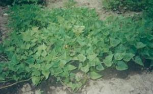 |
| Sweet potato crop, vine and tubers can be used as pig feed |
| (c) S. Gikonyo, Kenya |
Lucerne (Alfalfa)
Lucerne is high in protein, minerals trace elements and vitamins. Pigs readily eat it in green form; it can also be dried and ground to be included in the pigs ration. However, due to the amount of cellulose most of it will be wasted in the digestive tract.
Fodder beet and edible canna
Fodder beets are readily eaten by pigs when chopped and do not require any cooking. Both tuber and tops of edible canna can be fed.
Kales
Pigs readily eat them and due not require any cooking
Russian comfrey
Both the tubers and tops are readily eaten by the pigs. The leaves are richer in crude protein than potato vines. The leaves can be dried and included in pigs ration.
Giant Amaranths (terere)
It is a good source of calcium and iron. The plant is very easy to grow but difficult to eradicate.
Daily Feed Requirements
Fodder crops and swill can replace half of the grain/compounded feeds. About 6 kg of fodder/swill can replace one and half kg of grain/compounded feeds. For Lucerne due to its high protein content it can be fed to dry sows on alternative days. At no time however should the fodder crops constitute more than 50% of the pigs ration. Even if the farmer intended to replace all is compounded feeds with fodder crops, this is not feasible since a pig will not be able to finish fodder equivalent in kg to daily ration of compounded feeds.
- Dry/pregnant Sows and Gilts:
Dry sows and gilts give 2.5 kg day of sow and weaner meal
Give extra 1kg/day one week before serving gilts and sows and one week after service.
Give lactating sows 2.5 kg/day of sow and weaner meal for maintenance and 0.25 kg/day extra for each piglet being suckled. - Boars
Give boars 2.0-2.5 kg/day of pig sow and weaner. If the boar is regularly used give it 2.5 kg. - Piglets
Give creep pellets i.e. 0.5 - 1.00 kg/day from day 7 up to weaning time per piglet
The feed should be mixed with sow and weaner meal the last one week before weaning. - Feeding of Growing and Finishing pigs
- Pigs weaned at 7 weeks or older may be switched gradually to sow and weaner diet.
- For growing or finishing pigs all ration changes should be made gradually. If this is not possible the feeding level of the new diet should be low until the pigs become accustomed to it.
- Where post-weaning scours are a major problem, restricted feeding during the fist week after weaning may reduce the incidents of scours.
- For treatment in case of an outbreak of scouring, medication through drinking water is preferable since sick pigs go off feed.
Feeding rates by age and expected weight:
| Age (wks) | Weight (kg) | Feed/day (kg) | Feed type |
| 8-10 | 12-15 | 0.66 | Sow and weaner/starter |
| 10-12 | 15-20 | 1.0 | Sow and weaner |
| 12-16 | 20-40 | 2 | " |
| 16-18 | 40-50 | 2.5 | Finnisher |
| 18-24 | 50-84 | 3.0 | " |
| 24-28 | 84-105 | 3 | " |
NB: When feeding animals any sudden changes can lead to loss of production. Thus feed changes should be as gradual as possible.
Water requirements
Clean and fresh water should be provided ad lib to all categories of pigs. The amount of water required depends of the ration (dry matter content), production of the animal and the weather conditions. Lactating sows will take 15- 25 litres/day of water depending on litter size. Dry sows and boars will take up to 10 litres/day while pregnant sows will take 12-14 litres/day. Fatteners need 4 to 15 litres/day depending on age. At higher environmental temperatures, the water requirement increases.
Feeding Methods
The methods of feeding to be recommended will depend on the number of pigs to be fed, the rate of gain desired, the type of pig and the amount of labour available. Feed trough use is recommended because it prevents feed waste.
- Dry feeding. Feeding dry feeds without water added. This is best for pelleted feeds but there is wastage and dusty conditions when the feed is in the form of dry meal or mash.
- Wet Feeding. This is the feeding system where water is sprinkled on the feed to minimize the dust. Strict hygiene should be maintained in this method. Less feed wastage unlike the dry feeding and reduced lung irritation caused by dry dusty feeds.
- Restricted Feeding. In this feeding regime pigs are fed once or twice per day. Feeding twice per day is recommended.
Read here on Holistic disease management
Common pests and diseases in pigs
Diseases can lead to a loss of income, slower growth rates or loss of animals due to death. In these circumstances it is essential to treat the animals, as long as the cost of treatment is not more than the loss of the expected income from the sale of the pigs. If possible, you should seek the advice of a vet when you suspect there is a disease in your piggery.
Pigs are at great risk of falling ill because many animals are kept together in a small space. Infectious diseases spread easily and quickly among the animals. You will also find that commercial breeds tend to be less resistant to diseases.
Sick pigs generally have the following signs:
- It may not eat or not show interest in feed /water
- It may breathe rapidly indicating of a fever
- In white skin-coloured pigs the skin may become reddish.
- It may have diarrhoea which may sometimes be bloody or blood stained.
- Droopy ears or ears pointing downwards.
- Dull eyes.
- Dull skin and hair.
- Its tail will become limp.
- Separates itself from the rest
Always remember that care and close observation is as important as medical treatments. By supporting the animal to gain strength, you support the natural healing process. In organic animal farming, good care is highly prioritized. Provide the diseased animal with soft bedding, enough water and appropriate feed, and give it relevant care, e.g. if it has a wound, wash and manage it. Isolate the diseased animal if relevant, and keep the healthy and diseased animals apart, if there is a contagious disease
Parasitic diseases
Parasites are divided into external and internal parasites.
Worms are one of the most serious threats to pig keeping. There are more than 30 types affecting the intestines of pigs. The most important are the intestinal roundworm, the lung worm, the whip worm and the tape worm.
1) Roundworm
Roundworms live in the gut and take food from the pig. The pig can therefore become thin.
Symptoms:
- Anorexia (loss of appetite) in advanced stages.
- Anaemia (loss of condition).
- Weight loss in later stages.
- When the worms die suddenly after treatment, they can block the gut and cause sudden death.
Prevention:
- Control with medicine in the food is useful and provide clean and dry pens.
- Separation of young ones from adults.
- Washing sows before farrowing.
- If pigs are allowed outside, rotational grazing and periodic resting of pastures to allow disinfection.
Treatment:
- Periodic deworming
- Herbal treatment: herbs such as Moringa are considered to be antihelmintic ( able to kill intestinal worms)
Symptoms:
- Anaemia
- Haemorrhagic diarrhoea causing anaemia
- Weight loss
Prevention and treatment:
- Deworming
Symptoms:
- Coughing
Prevention
- Deworming
- Clean pens
Treatment:
- Riperol (or Levamisole) injections are used in treatment, but are may be difficult to obtain in many places.
Pork measles is caused by tapeworms which live in the muscles of pigs. They do not usually affect the pig, but can lead to pain and the pig may find it difficult to move around. When people eat undercooked measly pork, the worms develop inside the people, and can make them very sick.
Symptoms:
- Poor growth
- Rough grey hair coat
- Swollen belly
- Emaciation
- Anaemia
Prevention
- Prevent the pigs from wandering about where they can feed on human faeces
- Make sure that people working with pigs use toilets (hygiene and sanitation)
- Deworming
External parasites
External parasites include mange, lies and myiasis (see below).
Mange
It is caused by small parasites called mites that live in the skin. They provoke severe itching and irritation.
Symptoms
- The pig becomes itchy, and scratches and rubs against the walls of the sty and other objects with the skin between the legs, around the eyes, ears and neck being principally affected.
- The coat looks dull, and there are bare patches, heavy crusts, and lines on the body that look like ribs
- Restlessness and itching which can be very severe
- Red pimples on skin, which turn into crusts and scabs. Later the skin looks very rough, is thickened and covered with flakes scratching. Skin may show red spots or bite wounds
- Thick skin and rough hair coat
- Anaemia in severe cases especially in piglets
- Death in severe cases
Prevention:
- Wash the sow before farrowing at least twice at a one week interval.
- Inspect and examine gilts carefully upon entering the farm, and treat them if necessary.
- Examine the animals before serving and treat them if relevant.
- Wash all pigs at the beginning of fattening if mange is already a problem.
- General cleanliness.
| 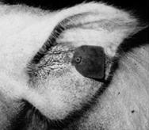 |
| Crusts seen within the ear of a pig due to mange infestation |
| (c) S. Gikonyo, Kenya
|
Treatment:
- Remove scales and dirt with soap and water and a stiff brush.
- Afterwards the pig should be washed with organophosphate compounds. Repeat this treatment several times
- Ivermectin injection is a very effective treatment against mange and all other parasites. Spraying the animals with cattle dip also kills many parasites on the skin
- Herbal treatment: Smearing with coconut oil can be an effective control in cases of light contamination
Lice
These are blood suckers that also cause irritation of the skin.
Symptoms
- Itching
- Skin may show red spots or bite wounds.
- Thick skin and rough hair coat.
- Anaemia in severe cases especially in piglets.
Prevention:
- General cleanliness
- Examine piglets before putting them in fattening house, and treat if relevant. Fatteners don't need to be treated
- Examine gilts before first service, and treat if relevant
- Examine boars twice a year, and treat if relevant
- Examine new stock on arrival and seven days later. Piglets below three weeks should not be treated. Treat if it is found relevant.
Treatment:
- The insecticide benzene hexachloride is a very effective remedy (0.1 - 0.25% solution) against lice. Treatment should be repeated after 7 days since the insecticide only kills adults and not eggs.
- Lice can be kept away to a certain extent by planting a pole sturdily in the ground at an angle of 45deg with an old sack wound around it immersed in crude oil or used motor-oil.
Myiasis
Disease caused by flies, which lay eggs in the wounds. The eggs hatch into larvae which live and feed on the flesh and fall off when they mature, creating more wounds.
Symptoms
- Infected wounds look very wet and dirty and the edges can be covered with a grey mass which are the eggs of flies.
- Later on, larva can be seen as screw-shaped pinkish worms crawling through the wound.
- The pigs show annoyance and try to find a shady place.
- Death may occur.
Prevention and treatment
- Clean the wound daily with water and disinfectant then apply insecticide on wound to cover edges too.
- Best working insecticides are the long-acting ones e.g. diazinon or supona. Whenever using insecticides, check with the organic standards whether it is allowed, and minimize it as much as possible, and seek alternatives.
- Good mange control program to prevent wounds smooth walls and floors.
- Do not use sharp objects.
- Avoid overcrowding to reduce fighting.
- Tail docking, ears notching and castration should be handled properly and the umbilical cord disinfected.
1) Deworming
- Boars - every 6 months
- Sows - 2 weeks before farrowing and after weaning
- Piglets - 1 week after weaning
- Fatteners - 1 week after weaning and 3 months latter
- Gilts - 1 week after weaning, at 3 months and at 7 months of age and at least 2 weeks before service
2) Control of Lice, Fleas, Mange
- Scrub sows with Gamma BHC insecticides four days before farrowing.
- Clean and scrub the farrowing pens before use.
Reproductive Disorders and Diseases
These include, Brucellosis, mastitis, leptospirosis, endometritis and agalactia. For more information see here
When the sow does not come on heat
Symptoms:
- No heat signs
This could be caused by low body weight due to poor feeding, overweight, mineral deficiency, intestinal worms, chronic disease, the animal has just given birth, heavy infestation with parasites
Prevention:
- Improve feeding of mineral-rich feeds.
- Regularly deworm your animals.
- Allow the female to stay with the boar.
Treatment:
- Gilts should not be treated at all because they may show anaphrodisias after every litter
- Sows should be treated on the same day as weaning, and in very severe cases, 3 weeks after weaning
- Repeating treatment is of no use
Symptoms:
- Birth of a small litter at the normal time due to Early Embryoric Death (EED) with mummies of different ages together with fresh or macerated dead foetuses and weak living piglets which die in few days.
Prevention and treatment
- No therapy
- Vaccination of all gilts and sows before pregnancy
Leptospirosis (Bacteria)
Symptoms:
- Fever, anorexia, diarrhoea, bloody urine, nervous symptons caused by meningitis.
- Abortion in last three months of pregnancy.
- In sows which are affected later, weak piglets are born.
- Mummified and macerated foetuses are common in the litters.
- Infertility associated with venereal spread may be responsible for repeat breeders.
Prevention and treatment:
- Elimination of mice and rats and other rodents.
- Vaccination and hygienic measures. Vaccines are not available for all types of the diseases and vaccination may not prevent bloody urine.
- Treat all sows with injection or streptomycin before serving.
- Use antibiotibics especially streptomycin for all ages.
Brucellosis
Symptoms:
- Anorexia, fever, stiff legs, occasional lameness, early abortion (returns to oestrus 5 - 8 weeks after service as a result of infection of service)
- Infection later in pregnancy gives rise to litter with mummified, still born or weak piglets.
- Bloody vulva discharge and endometritis.
- Retained placenta.
- Boars usually develop orchitis (inflammation of one or both testicles) and epididymitis within seven days of infection.
- The testicles are swollen and painful and permanent sterility can be the result.
Prevention and treatment
- Prevention is based on hygienic measures and purchase of stock from clean herds only.
- Never treat by antibiotics.
- No treatment/vaccination is 100% effective
- Slaughter all animals and do restocking. Restocking should be after one month.
Uterine Prolapse
Symptoms:
- The appearance of the uterus outside the vulva.
Prevention and treatment:
- Uterine prolapse reduction is often not possible since it is very traumatic and the best therapy is to amputate the whole uterus. However 50% of sows do not survive this operation, therefore slaughter should be considered.
Mastitis
Bacteria infection causes an inflammation of the mammary organ and results in changes in milk production. These bacteria enter the wounds in the udder.
Symptoms
- Swollen, hot and painful udder.
- Absence or reduction of milk in the affected udder.
- Sow refuses to suckle her piglets. As a result, piglets squeal due to hunger.
- Sow has depression and often fever.
Prevention:
- Provide adequate bedding
- Keep pig pens clean, dry and free of sharp objects, clip milk teeth of baby pigs.
Treatment:
- Gently massage the affected udder with lukewarm water.
- Do not allow the young to suck milk from the infected sow.
- Remove the milk from the infected udder and discard.
- Separate sow from piglets and reduce access to teats (allow a few piglets to suckle at a time). If possible, foster piglets to lactating mothers.
- Use antibiotics. Inject penicillin-streptomycin into the muscle of hip or neck.
Endometritis (bacteria)
Symptoms
- Vulval discharge of vaginal or uterine origin during urination.
- In case of metrititis, fever and agalactia may occur.
Prevention and treatment
- Antimicrobial by injection or locally by irrigation of the uterus and vagina, oxytocin can be given to stimulate uteric contractions once or twice a day.
- Hygiene.
- Hygienic measures should be taken to avoid or minimize scouring incidence.
- Regular deworming should also be done as a control measure to scouring
- Feed changes should be gradual and not drastic to avoid scouring
Diarrhoea/Enteritis
Symptoms
- Acute diarrhoea in piglets is watery, yellowish grey and within a very short time piglets become thin with sunken eyes due to dehydration.
- Death can occur within 2 - 3 days. Death in piglets can occur even within one day before any sign of diarrhoea is observed.
Prevention
- Keep pens, feed and watering troughs clean.
- Separate affected animals from healthy animals.
- Do not change abruptly an animal's ration.
- Make sure that piglets have sufficient colostrum within 36 hours of birth
Treatment
- Vaccination
- Plenty of drinking water with electrolytes
- Use of antibiotics.
- Herbal medicine: Fresh leaves of guava or star apple (Sapodilla) This will treat the symptoms only.
Symptoms:
- Acute haemorrhagic or necrotic inflammation of the gut during the first and second week of birth.
- In acute cases the diarrhoea is watery with an orange-red colour due to blood and is often bubbly.
- In later stages, shreds of dead tissues can be found.
- Piglets are weak and don't suckle. They get pale and die within a few days.
Prevention and treatment
- Vaccination
- Make sure that piglets have sufficient colostrum within 24 hours of birth
- Keep the pigs warm
- Cleanliness
- Contact the vet
Transmissible gastroenteritis is a common viral disease of the small intestine that causes vomiting and profuse diarrhoea in pigs of all ages. It spreads rapidly. Piglets less than one-week old rarely survive the disease. Symptoms:
- Very high mortality mainly in piglets upto 14 days old.
- The piglets often vomit and have severe greenish-yellow watery diarrhoea, dehydration.
- In sows the diarrhoea is greyish, they vomit, and abortion may occur.
- In fatteners the symptoms are like those in sows.
Prevention and treatment:
- Give electrolytes to piglets and keep them warm.
- Antibiotics prevent secondary infection but don't provide a cure.
Symptoms:
- Faeces are pasty and fatty, white or yellowish
Prevention and treatment
- Remove creep feed for a few days.
- Use antibiotics as prescribed by a veterinary doctor.
Symptoms:
- Diarrhoea with no traces of blood.
- Death from dehydration or blood poisoning (septicaemia).
Prevention and treatment:
- Increase creep feed before weaning.
- Avoid stress to piglets by not mixing piglets from different litters.
- Good hygienic measures include roughage in diet.
- Use antibiotics as prescribed by a veterinary doctor.
Salmonellosis
Symptoms:
- High fever, dullness, anorexia, weakness, nervous symptoms.
- Bluish-red colouring of the ears, limbs and the centre of the belly.
- Bloody spots all over the body.
- Wasting and persistent greyish diarrhoea sometimes mixed with blood and shreds or necrotic material from the gut.
Prevention and treatment:
- Normal hygienic measures, pelleted feed, thorough cooking of the swill.
- Remove feed for two days and provide clean water.
- Use antibiotics as prescribed by a veterinary doctor.
Known by a number of names, including bloody diarrhoea, hemorrhagic enteritis bloody scours and black scours. It affects pigs of all ages, sometimes causing death.
Symptoms:
- In acute cases wasting and passing of diarrhoea containing varying amounts of mucus, blood and necrotic material.
- Fever.
- In chronic cases, pigs have greyish or brownish faeces, rough hair coat and low growth rate.
Prevention
- Delay reusing the pens of infected animals.
- Disinfect pens.
Treatment:
- Some herbal medicines (Moringa tree leaves) can be used to relieve the symptoms of diarrhoea and dehydration
- Use antibiotics as prescribed by a veterinary doctor
Post weaning syndrome (oedema disease)
Symptoms:
- Development of oedema and nervous signs.
- Paleness peculiar squeaky voice.
- General incoordination and loss of balance.
- Sudden death.
Prevention and treatment
- Affected piglets should be weaned by removal of sow and placed on low-level diet.
- Avoid stress.
- Hygiene.
- Include roughages in diet.
- Use antibiotics as prescribed by a veterinary doctor
Diseases of the Respiratory Tract
These include, influenza, pseudorabies, pneumonia, atrophic rhinitis and pasteurellosis.
Symptoms:
- Affected animals are apathetic.
- Anorexia
- High fever, coughing and sneezing, difficulty in breathing
- Red eyes with discharge
- Loss of condition.
Prevention and treatment:
- Good ventilation.
- Vaccination.
- No specific treatment. To prevent secondary infection, use antibiotics as prescribed by a veterinary doctor .
Symptoms:
- Acute cases show anorexia, high fever, laboured respiration, red or blue colouring of ear-tips, belly, legs and end of tail.
- Death within 4 - 6 hours of onset of clinical symptoms.
- Blood stained froth from mouth or nose.
- Abortion.
- In chronic cases, anorexia, coughing and depressed growth rate.
Prevention and treatment:
- Vaccines only prevent mortality.
- Use antibiotics as prescribed by a veterinary doctor.
Symptoms:
- Sneezing in younger pigs.
- Shortening or deviation of upper jaw - poor growth
Prevention and treatment:
- Hygiene
- Use antibiotics as prescribed by a veterinary doctor
Pasteurellosis
Symptoms:
- Coughing
- Breathing through the mouth.
Prevention and treatment:
- Hygiene.
- Use antibiotics as prescribed by a veterinary doctor
Porcine Respiratory and Reproductive Syndrome (PRRS)
Symptoms:
- Blue ears and forced breathing
- Lactating sows have rough hair coat.
- Gilts have problem getting on heat and early abortion.
- High mortality in weaners
- In boars, high percentage of defective sperm and less libido
Prevention and treatment:
- Use of antibiotics as prescribed by a veterinary doctor.
- Vaccination helps but it is so expensive that it may not be cost effective.
Disease Causing Problems in Walking
Symptoms:
- Inflammation of joints. Thick soft joints.
Prevention and treatment:
- Use antibiotics as prescribed by a veterinary doctor.
Streptococcal infections
Symptoms:
- Septicaemia (blood poisoning) which may cause immediate death.
- Young pigs rarely recover
- Sudden death in older pigs.
- Fever, nervous signs and arthritis mostly in weaners and fatteners.
Prevention and treatment:
- Proper hygiene. Wash sow before it enters the farrowing pen.
- Use antibiotics as prescribed by a veterinary doctor.
Greasy Pig Disease
Symptoms:
- Thin, pale brown flakes on the skin surface.
- Wet skin covered with crusts.
- Rough wet and reddish skin below the crusts, no itching
- Death may occur
Prevention and treatment:
- Avoid fighting among pigs by mixing pigs from different pens.
- Teeth clipping, soft bedding
- Hygiene. Wash sows before entering farrowing pen.
- Use antibiotics as prescribed by a veterinary doctor.
Nutritional Disorders
Symptoms:
- Pale skin, weak piglets with high respiratory rate.
- Jaundice
- Blood stained faeces.
- Early death
Control and treatment:
- Provide iron injection or oral iron- paste containing iron, depending on the situation - consult a vet or an advisor
- Feeding compost- must be of good quality and supplied daily. Compost of poor quality may contain bacteria.
- Wood ash can also be put into the pen. This will not provide iron, but it does contain other important minerals.
Foot-and-mouth disease is an acute, highly contagious, viral disease of animals with hooves, such as cattle, water buffalo, goats and pigs.
Symptoms:
- Sudden onset of severe lameness, fever, formation of vesicles on coronary bands.
- Blisters can be found on thin-skinned areas like udder, teats, anal area and eyelids. These blisters rupture within one day.
- There may be frothy saliva, anorexia, sometimes hooves become loose and fall off.
- Sows may abort.
Prevention and treatment:
- Vaccination
- Quarantine
- Proper cooking of swill.
- Slaughter and burial.
Symptoms:
- Lesions on the body
- Fall in temperature before onset of clinical signs.
- Reddening of skin and ears.
- Incordination of hind limbs.
- Constipation diarrhoea, anorexia.
- The animal dies the next day after the attack. 95 - 100% mortality.
| 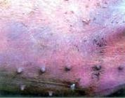 |
| A pig with African Swine Fever, showing a bluish-purple colour and bleeding under the skin. |
| (c) S. Gikonyo, Kenya
|
Prevention and treatment:
- Quarantine.
- Boiling of swill.
- Restriction of movement of meat from infected areas
- Vaccination
- Disinfection
- No therapy (treatment)
Anthrax (bacterial)
Rare in pigs and associated with contaminated feed containing meat.
Symptoms:
- Oedema and swelling of the neck region.
- Dysponea (breathing difficulty).
- Fever, anorexia and passage of bloody faeces.
- Sudden death.
Prevention and treatment:
- Use antibiotics (penicillin) as prescribed by a veterinary doctor.
- Thorough disinfection of the farm and burning of carcasses.
Review Process
1. Contributed by Stephen Gikonyo, Ministry of Livestock, Kenya, in 2010
2. Partial review by Mette Vaarst & Gidi Smolders, April 2013
Information Source Links
- AIC Documentation Unit, Kenya
- Feeding organic pigs, A handbook of raw materials and recommendations of feeding practice, 2002. University of Newcastle
- Livestock production extension manual (MoLD - Kenya) (2008).
- Wabacha, J.K., Mribei, J.M., Mulei, C.M., Kyule, M.N., Zessin, Z.H. and Oluoch-Kosura, W. (2004). Characterization of smallholder pig production in Kikuyu Division, Central Kenya. In: Preventive Veterinary Medicine 63 (3) pg 183-195.